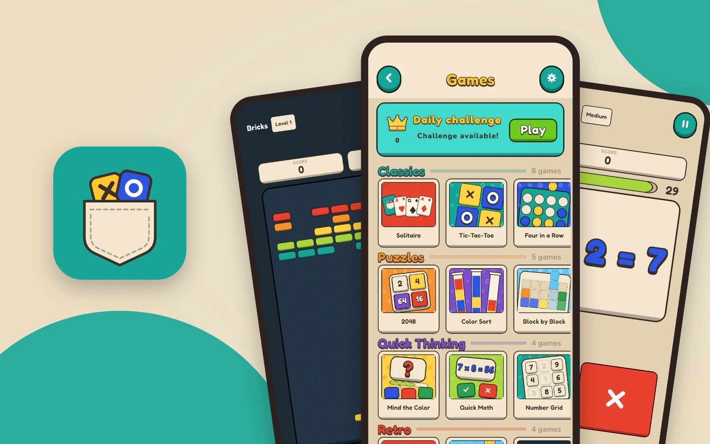
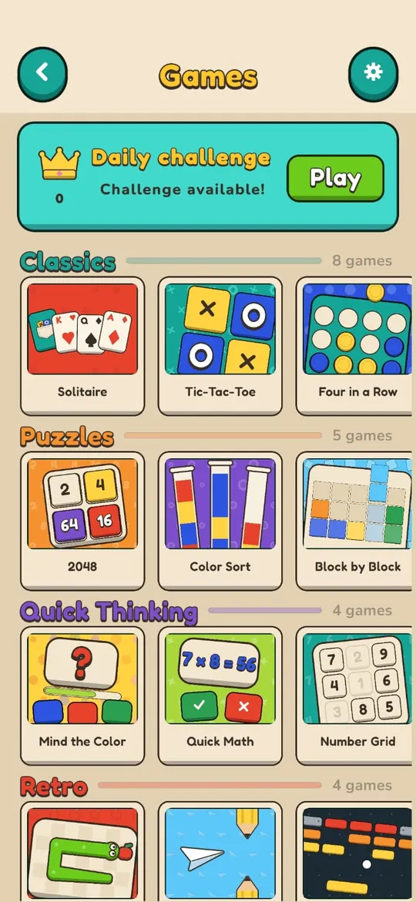
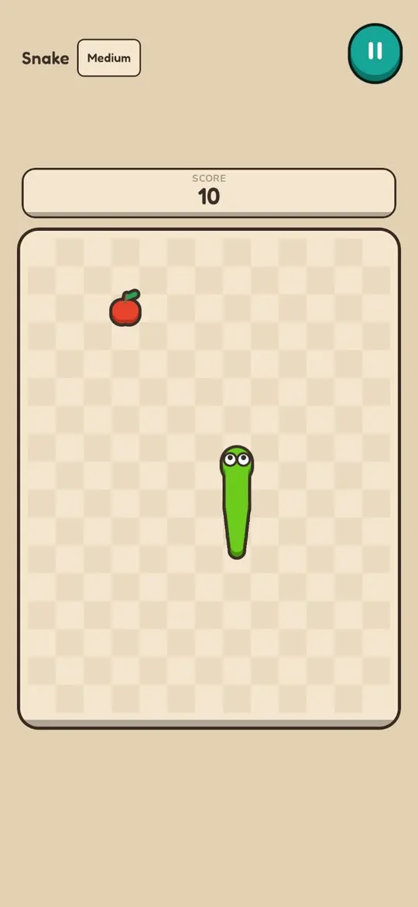
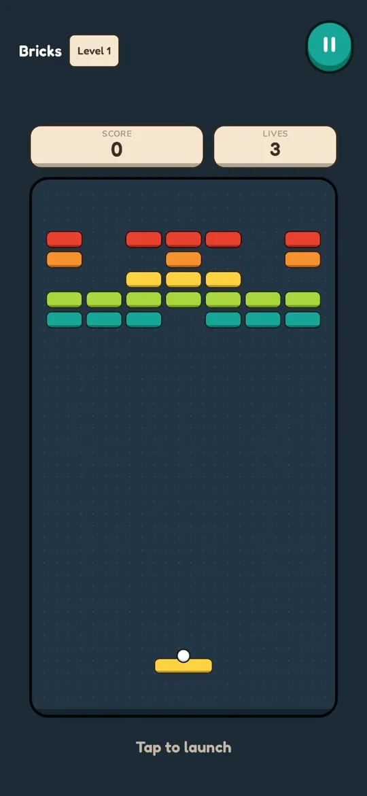
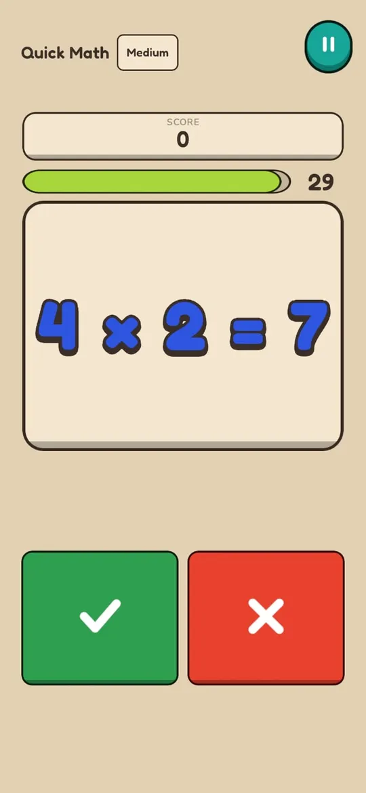
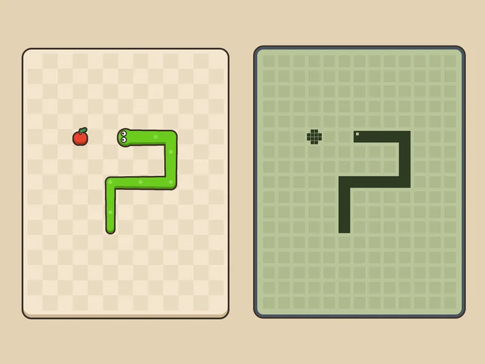
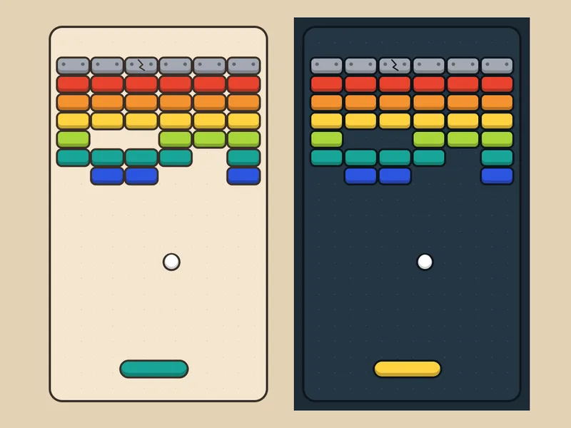
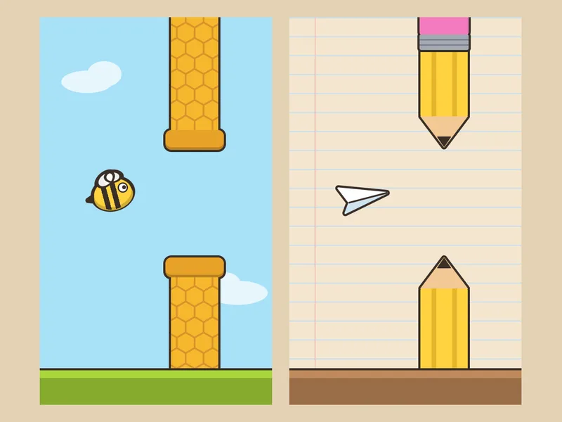
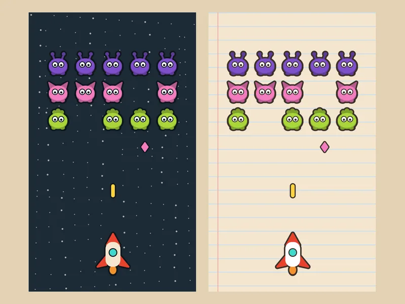

Pocket Break
PublicadoMinijuegos cortos para pasar el rato, estés donde estés.
- Idea
- Prototipo
- Publicado en Android
- Puzles
- Minijuegos
- Sin conexión
- Español e inglés

Así se ve
Capturas reales del juego en un teléfono Android.




Qué es
Partidas cortas para la fila, el bus o una pausa.
- Género
- Minijuegos y puzles
- Plataforma
- Android
- Conexión
- Se juega sin internet
- Reto diario
- Uno nuevo cada día
- Idiomas
- Español e inglés
- Precio
- Gratis, con anuncios y una compra única para quitarlos
Cómo se hizo
Las ideas de diseño detrás del juego.
Nostalgia de bolsillo
Varios minijuegos parten de clásicos que muchos jugaron en su primer teléfono o consola, como Snake o Bricks, con un estilo actual y controles pensados para una pantalla táctil.
Agilidad mental en el tiempo muerto
Juegos como Quick Math o Number Grid entrenan el cálculo y la atención en partidas cortas, para aprovechar los minutos muertos del día: la fila, el bus o una espera.
Siempre a mano
Todo funciona sin conexión, así que se puede jugar en cualquier lugar, y el reto diario da un motivo para volver cada día.

SnakeEstilo actual frente a uno que recuerda a los primeros teléfonos. 
BricksPrueba de una versión clara y otra oscura. 
Juego de vueloUna abeja entre panales o un avión de papel entre lápices. 
InvasoresEl espacio o una hoja de cuaderno.
Pruebas de estilo de los primeros días de desarrollo, en octubre de 2026.
Novedades
Versión 2.0.031 de octubre de 2026
Publicada en Google Play.
¿Encontraste un error?
Escribe contando qué pasó y en qué teléfono. Todos los mensajes se leen.